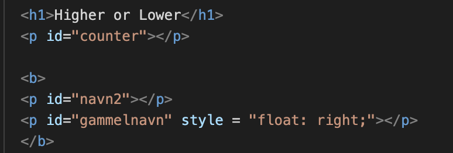
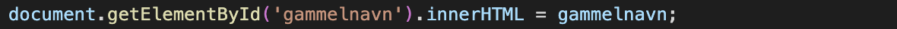
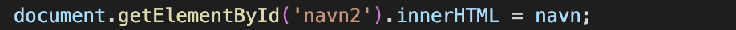

Koden i spillet

Den ovenstående kode er en del af html delen, der skaber hjemmesiden. Måden det er blevet sat op, gør at hvis man henviser noget til ID'erne med henholdsvis 'counter', 'navn2' og 'gammelnavn', så vil det blive indsat der.
 
Ovenstående kode henviser det, som variablen gammelnavn og variablen navn har til ID'erne gammelnavn og navn2.
Her kan du komme tilbage: Databaser